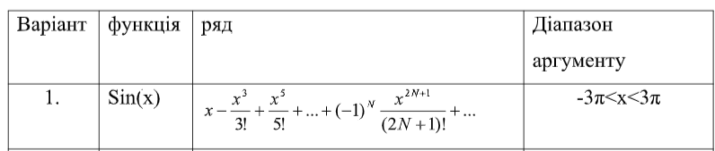

Лабараторна робота №7
Виконала студентка Юлія Беженар, група КН-32
Сервіси
Завдання
1. Розробити сервіс для табулювання функції відповідно до варіанту
2. Розробити сервіс для розрахунку значень функції за допомогою ряду
відповідно до варіанту
3. Розробити сервіс для розрахунку значень
функції за допомогою рекурсії відповідно до варіанту
4. Розробити
сервіс для логування обчислених значень у консоль та використати його у
попередніх трьох сервісах
5. У основному застосунку підключити
сервіси, вивести результати усіх розрахунків та побудувати графіки для
усіх обрахунків.

Варіант завдання
Функція, ряд та діапазон аргументу, надані за
варіатном.
Розрахувати
Результати
{{item.key}}
{{item.value}}